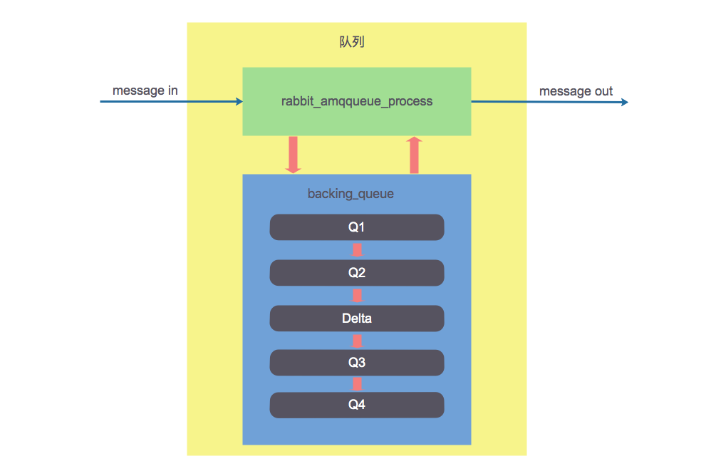
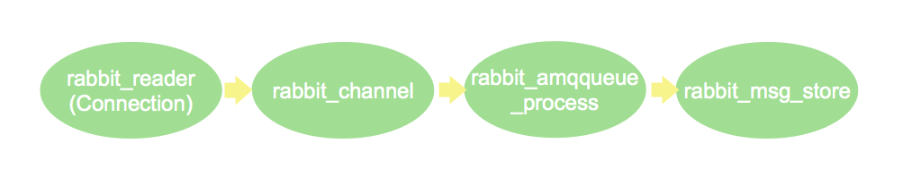

RabbitMQ内部原理简介
本篇文章中主要是 RabbitMQ 内部原理的简介，包括存储机制、队列结构、内存告警、磁盘告警、流控等。
存储机制
在 RabbitMQ 中消息可能存在内存中，也有可能存在磁盘中，也有可能内存和磁盘中都存在：
- 对于持久化的消息，到达队列时就会写入磁盘，如果内存充裕，持久化的消息也会在内存中保存一份备份，这样可以提高一定的性能。
- 对于非持久化消息，一般只存在内存中，但是当内存紧张时，也会写入磁盘以节省内存空间。
持久层
消息的落盘是在 RabbitMQ 持久层实现的，持久层是一个逻辑上的概念，它实际上包括两个部分：队列索引（rabbit_queue_index）和消息存储（rabbit_msg_store）。
对于一个落盘消息来说，rabbit_queue_index 存储它的索引信息，rabbit_msg_store 存储具体的内容。但是如果消息比较小（默认小于 4096B）的话，消息的内容就会和索引一起存储在 rabbit_queue_index 中，这样可以得到一些性能上的优化。
rabbit_queue_index
负责维护队列中落盘消息的信息，包括消息的存储地点、是否已经交付给消费者、是否已经被消费者 ack 等。每个队列都有一个对应的 rabbit_queue_index。
rabbit_queue_index 中以顺序（文件名从 0 开始累加）的段文件存储，文件名后缀 .idx，每个段文件包含固定的 SEGMENT_ENTRY_COUNT 条记录，SEGMENT_ENTRY_COUNT 默认值为 16384。
rabbit_msg_store
以键值对的形式存储消息，它被所有队列共享，在每个节点中有且只有一个。从技术层面上讲，rabbit_msg_store 具体还可以分为两个部分：
- msg_store_persistent：负责存储持久化消息
- msg_store_transient：负责存储非持久化消息
rabbit_msg_store 中以顺序（文件名从 0 开始累加）的段文件存储，文件名后缀 .rdq，每个段文件的大小由 file_size_limit 指定。
队列结构
通常队列由两部分组成：
- rabbit_amqqueue_process：负责协议相关的消息处理，包括接收生产者发布的消息、向消费者交付消息、处理消息的确认（包括生产端 confirm 和消费端 ack）等。
- backing_queue：存储消息的具体形式和引擎，为 rabbit_amqqueue_process 提供接口。
消息的四种状态
如果消息投递的队列时空的，并且有消费者订阅了这个队列，则消息并不会进入队列而是直接投递给消费者。当消息不能直接投递时，将会进入队列等待投递。消息进入队列后，会根据系统负载情况的不同而处于不同的状态：
- alpha：消息内容和索引都存储在内存中
- beta：消息内容在磁盘，索引在内存
- gamma：消息内容在磁盘，索引在内存和磁盘中都存在
- delta：消息内容和索引都在磁盘
对于持久化的消息，消息内容和索引都必须先存储到磁盘上，才会处于上述状态中的一种（即只可能处于alpha、gamma、delta三种状态之一），而 gamma 是只有持久化的消息才有的状态。
区分四种状态的主要作用是满足不同内存和 CPU 的需求，alpha 状态最耗内存，但很少消耗 CPU；delta 状态基本不耗内存，但是需要消耗更多的 CPU 和磁盘 IO。
消息在队列中的流动
对于普通的没有设置优先级和镜像的队列来讲，backing_queue 的默认实现是 rabbit_variable_queue，其内部通过 Q1、Q2、Delta、Q3、Q4 五个子队列来体现消息的各个状态。整个队列的结构如下图所示：

Q1 和 Q4 只包含 alpha 状态的消息，Q2 和 Q3 包含 beta 和 gamma 状态的消息，Delta 只包含 delta 状态的消息。一般情况下消息会按照 Q1 -> Q2 -> Delta -> Q3 ->Q4 这样的顺序流动，但是并不是每一条消息都会经历所有的状态，这个取决于当前系统的负载状况。
入队列
消息如果不能直接投递则需要进入队列，进入队列时如果队列为空，则消息直接进入 Q4，随着消息越来越多，内存紧张时将 Q4 队尾部分消息转入 Q3，进而再转入 Delta。此时如果再有消息进来，消息将存入 Q1，Q1 内的消息随着内存紧张会转入 Q2，进而再转入 Delta。
出队列
- 当消费者获取消息时，首先会从 Q4 获取消息，如果获取成功则返回，否则尝试从 Q3 中获取消息。
- 如果 Q3 为空，则整个队列为空；如果 Q3 不为空，则取出 Q3 中的消息。
- 取出 Q3 消息后再次判断 Q3 是否为空，如果不为空流程结束；如果为空，则判断 Delta 是否为空。
- Delta 为空，则认为 Q2、Delta、Q3、Q4 都为空，把 Q1 中消息转移到 Q4；Delta 不为空，则将 Delta 中消息转移到 Q3，然后再判断 Delta 是否为空。
- 如果此时 Delta 不为为空，流程结束，否则则将 Q2 中的消息也转移到 Q3。
队列堆积的影响
通常负载正常时，如果消息被消费的速度不小于接收新消息的速度，对于非持久化的消息来说，极有可能只处于 alpha 状态；对于持久化的消息来说，它一定会进入 gamma 状态，并且在开启 publisher confirm 机制时，只有到了 gamma 状态才会确认消息已被接收，如果消费速度足够快、内存也充足，这些消息也不会走到下一个状态。
在负载较高时，收到的消息不能很快被消费掉，这些消息就会进入很深的队列中去，这样会增加处理每个消息的平均开销，如此用来处理新流入消息的能力就会降低，使得后流入的消息又被积压到很深的队列中去，继续增加处理每个消息的平均开销，使得系统的处理能力大大降低。
应对这种情况，可以采用如下几种措施：
- 增加消费者
- 增加 prefetch_count 的值，即一次发送多条消息给消费者
- 采用 multiple_ack，降低服务器处理 ack 带来的开销
- 流量控制
内存和磁盘告警
当内存的使用超过配置的阈值或者磁盘的剩余空间低于配置的阈值时，RabbitMQ 就会暂时阻塞客户端的连接（Connection）并停止接收从客户端发来的消息，以此避免服务崩溃。
被阻塞的 Connection 的状态要么是 blocking，要么是 blocked。前者对应并不试图发消息的 Connection，比如消费者使用的 Connection，此时 Connection 可以继续运行，也就是消费者可以继续消费消息；后者对应会向服务器发消息的 Connection，比如生产者使用的 Connection，这时 Connection 会被停止发消息。在 AMQP 协议中，虽然生产者和消费者可以使用同一个 Connection，但是我们要避免这种用法，防止消费者也被阻塞。
内存告警
默认情况下，当 RabbitMQ 使用的内存超过 40% 时，就会产生告警并阻塞所有生产者。
默认情况下，当 内存使用达到内存阈值的 50% 时，就会进行换页（Paging）动作，Paging将大量 alpha 状态的消息转换为 beta 和 gamma；如果内存依然紧张，继续将 beta 和 gamma 状态转换为delta 状态。Paging是一个持续过程，涉及到大量消息的多种状态转换，所以Paging的开销较大，严重影响系统性能。
磁盘告警
默认情况下，磁盘阈值为 50MB。当磁盘剩余空间小于磁盘阈值时，就会阻塞生产者并停止换页动作。
流控
RabbitMQ 除了使用内存和磁盘告警外，从 2.8.0 开始，又引入了流控机制来保证服务器的稳定性。内存和磁盘告警相当于全局流控，一旦触发则阻塞集群中所有的 Connection，而流控可以针对单个Connection，防止消息发送速率过快。
RabbitMQ 使用了一种基于信用证算法的流控机制来监控各个进程的进程邮箱，当某个进程负载过高而来不及处理消息时，这个进程的进程邮箱就会开始堆积消息，当堆积到一定程度后，就会阻塞而不接收上游的新消息。
RabbitMQ 中几个关键进程及其对应关系如下：

其中各个进程如下所述：
- rabbit_reader：Connection 处理进程，负责接收、解析 AMQP 协议数据包等。
- rabbit_channel：Channel 处理进程，负责处理 AMQP 协议的各种方法，进行路由解析等。
- rabbit_amqqueue_process：队列处理进程，负责实现队列的所有逻辑。
- rabbit_msg_store：负责实现消息的持久化。
本作品采用知识共享署名 4.0 国际许可协议进行许可，转载请注明原文链接
本文链接：https://schhx.github.io/2019/03/27/RabbitMQ内部原理简介/